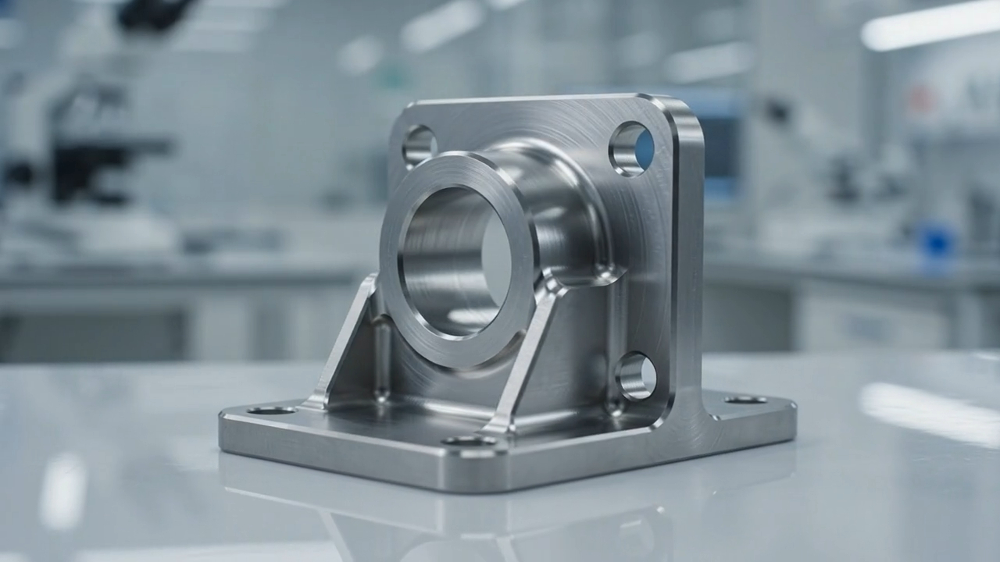

DESIGN / JUN 11, 2026 / 05 MIN READ
Constraints are
design material.

The limits around a product are not interruptions to creativity. They are the information that gives a good idea a useful shape.
Every physical product has constraints. A part may need to fit inside a small envelope, survive a particular load, meet a target cost, or move through an existing manufacturing process. When those facts arrive late, they feel like obstacles. When they arrive early, they become design material.
That shift changes the quality of the conversation. Instead of asking whether a concept can survive an arbitrary review at the end, the team can ask which requirement matters most, where flexibility exists, and what tradeoff is worth making. A slightly different wall thickness may simplify tooling. A controlled tolerance may protect assembly. A material change may improve reliability while reducing cost.
Making constraints visible also prevents false precision. Early in a project, the team may not know the final demand, supplier, or test method. That uncertainty should be recorded rather than hidden inside a drawing or a spreadsheet. Clear assumptions give everyone a chance to challenge them before they harden into expensive commitments.
The strongest designs are not the ones with the fewest limits. They are the ones that understand their limits well enough to use them. Bring manufacturing, analysis, cost, and user needs into the same room while the design can still respond. The result is usually simpler, more robust, and easier for the next person to build.
Discuss a design constraint ↗